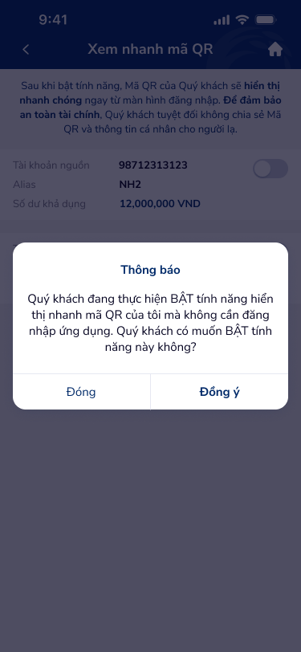

🔎 03 · Các vấn đề được phát hiện
🔴 Nghiêm trọng — Cần xử lý ngay
UXP-001
Từ xem-nhanh-ma-qr-3: QR screen có popup 'Thông báo' khi người dùng thử toggle...
Critical
| Hiện trạng | Từ xem-nhanh-ma-qr-3: QR screen có popup 'Thông báo' khi người dùng thử toggle chức năng nhạy cảm. Popup chặn toàn bộ screen, generic title 'Thông báo' không indicate nội dung. Thiếu trạng thái tải giữa các toggle actions. |
| Tác động | Modal blocking: người dùng muốn toggle ON/OFF chức năng nhanh nhưng popup interrupt flow. Generic 'Thông báo' không communicate severity — cùng title cho error, warning, info. người dùng phải đọc body text mới biết đây là gì — tốn cognitive effort. |
| Nguyên tắc vi phạm |
|
| Đề xuất |
|
🟡 Quan trọng — Ưu tiên cao
UXP-003
Từ xem-nhanh-ma-qr-2: Mô tả bảo mật QR hiển thị wall of text — dense paragraph...
Major| Hiện trạng | Từ xem-nhanh-ma-qr-2: Mô tả bảo mật QR hiển thị wall of text — dense paragraph không scannable. Text giải thích rủi ro + hướng dẫn nhưng format không structured (no bullets, no bold key points). |
| Tác động | Wall of text = TL;DR — người dùng skip toàn bộ security warning → proceed without understanding risk. ngân hàng security text cần structured format để key points visible even on quick scan. |
| Nguyên tắc vi phạm |
|
| Đề xuất |
|
UXP-004
Từ xem-nhanh-ma-qr-10: Nút 'Cài đặt ngay' trên popup không rõ destination —...
Major| Hiện trạng | Từ xem-nhanh-ma-qr-10: Nút 'Cài đặt ngay' trên popup không rõ destination — người dùng tap nút nhưng không biết sẽ đi đến đâu (cài đặt gì? app settings? biometric setup?). |
| Tác động | Ambiguous CTA creates hesitation: ngân hàng app người dùng cautious about tapping uncertain buttons. 'Cài đặt ngay' → cài đặt gì? Mất trust khi action unclear trong financial context. |
| Nguyên tắc vi phạm |
|
| Đề xuất |
|
⚪ Cải thiện — Nâng cao trải nghiệm
UXP-005
Từ xem-nhanh-ma-qr-4: QR code hiển thị nhưng không có brightness boost — screen...
Minor
| Hiện trạng | Từ xem-nhanh-ma-qr-4: QR code hiển thị nhưng không có brightness boost — screen không auto-increase brightness để scanner đọc dễ hơn. QR nhỏ hoặc contrast không đủ khi outdoor lighting. |
| Tác động | QR code khó scan trong ánh sáng mạnh (ngoài trời, cửa hàng sáng) nếu phone brightness thấp. Auto-brightness boost là standard pattern (VCB, MoMo, ZaloPay đều triển khai). Thiếu nó = người dùng phải manual increase brightness. |
| Nguyên tắc vi phạm |
|
| Đề xuất |
|
UXP-006
Từ xem-nhanh-ma-qr-16: Screen hiển thị nội dung nhưng thiếu context về...
Minor| Hiện trạng | Từ xem-nhanh-ma-qr-16: Screen hiển thị nội dung nhưng thiếu context về source/origin — người dùng không rõ data đến từ đâu hoặc last updated khi nào. |
| Tác động | Financial data without timestamp → người dùng không xác minh freshness. 'Số dư này là real-time hay cached từ sáng?' Trust issue với financial data. |
| Nguyên tắc vi phạm |
|
| Đề xuất |
|
UXP-007
Từ xem-nhanh-ma-qr-12: Tab bar hiển thị 5/5 tabs đều có badge đỏ (notification...
Minor| Hiện trạng | Từ xem-nhanh-ma-qr-12: Tab bar hiển thị 5/5 tabs đều có badge đỏ (notification dot). Khi tất cả tabs đều có badge → badge mất ý nghĩa — không phân biệt urgent vs normal. |
| Tác động | Badge fatigue: khi tất cả đều 'urgent', không gì thực sự urgent. người dùng ignore badges entirely → miss real notifications. Visual noise giảm overall UI quality. |
| Nguyên tắc vi phạm |
|
| Đề xuất |
|
UXP-008
Từ xem-nhanh-ma-qr-9: Banner CTA 'Chi tiết' positioned gần edge — small touch...
Minor| Hiện trạng | Từ xem-nhanh-ma-qr-9: Banner CTA 'Chi tiết' positioned gần edge — small touch target và proximity to screen edge tăng mistouch rate. |
| Tác động | Edge-positioned small CTA = poor ergonomics. Thumb zone mapping shows edges are lowest accuracy areas. Below WCAG minimum target size. |
| Nguyên tắc vi phạm |
|
| Đề xuất |
|
UXP-009
Màn hình hiển thị 2 tài khoản với toggle
Minor| Hiện trạng | Màn hình QR hiển thị 2 tài khoản với arrows trái/phải để toggle — nhưng thiếu pagination dots/indicator. Không rõ có bao nhiêu accounts total và đang view account nào. |
| Tác động | người dùng doesn't know total accounts or current position. thiếu pagination: 'Có 3 tài khoản hay 2? Đang xem cái nào?' Especially confusing khi accounts > 2. |
| Nguyên tắc vi phạm |
|
| Đề xuất |
|
UXP-010
Từ popup-touch-id: Touch ID popup dùng 'Hủy' button — wording potentially...
Minor| Hiện trạng | Từ popup-touch-id: Touch ID popup dùng 'Hủy' button — wording potentially confusing. 'Hủy' = cancel what? Cancel Touch ID setup or dismiss popup? |
| Tác động | Ambiguous button label: người dùng đang thiết lập Touch ID → 'Hủy' có thể mean cancel setup entirely. Should clarify: 'Để sau' (dismiss) vs 'Hủy cài đặt' (cancel). |
| Nguyên tắc vi phạm |
|
| Đề xuất |
|